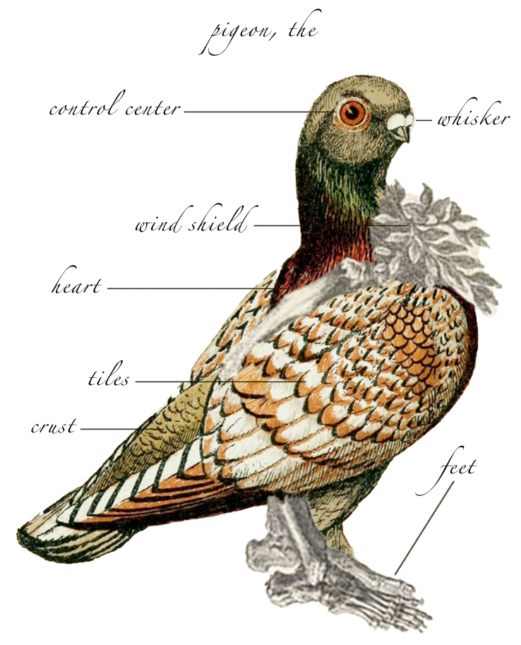

In strange kinships, Shape of Mustard (composers Eveline Vervliet and Philipp C. Mayer) explore the fictive story of a group of researchers from the 1860s, in search of the nature and culture of pigeons. The only things left are a book and some old audio tape recordings. With this documentation, the artists try to reconstruct the team’s research path and results. What are the limits of our understanding of another species? And what are the limits of our materials in acquiring and documenting such findings? In a sound walk around Marienplatz, Stuttgart, you will be given a glimpse into the research, while observing the pigeons that live around you.
